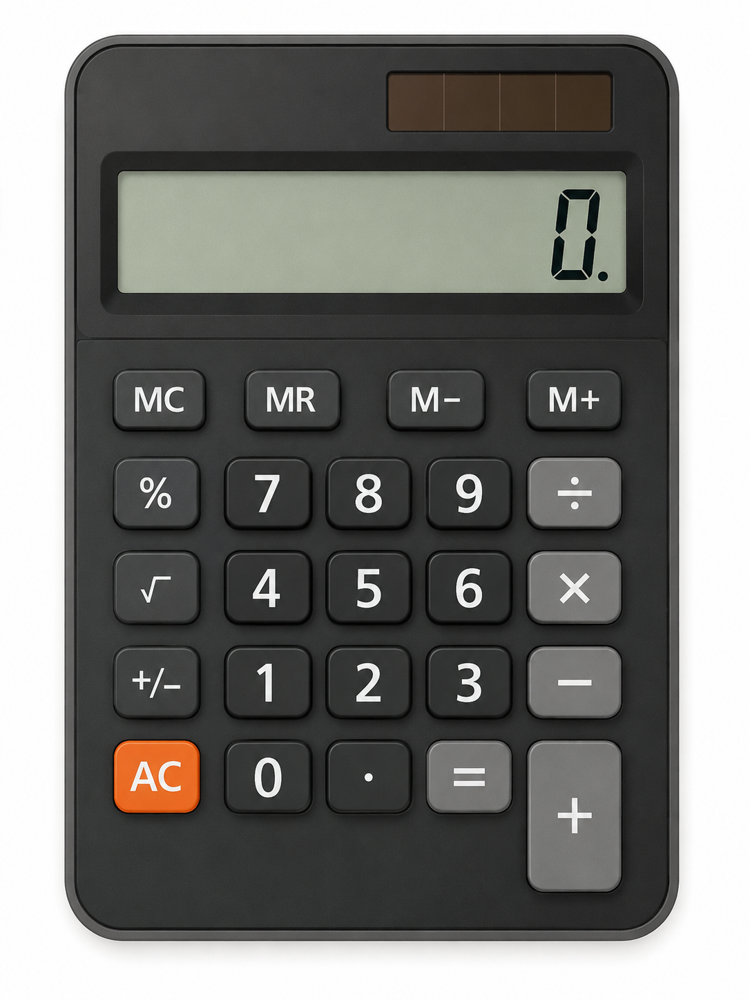

Product Overview
JPC is a mobile/desktop application used to carry out the following mathmatical calculations:
- Addition
- Subtraction
- Multiplication
- Division
- Percentage
- Square root

You can use this application instead of manually calculating the numbers. This saves a lot of time ad effort, thus enhancing the productivity.